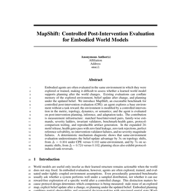
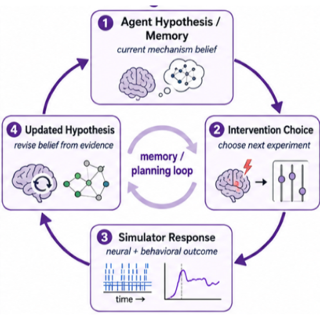
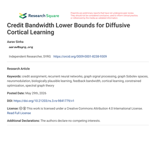

|
Aarav Sinha Hi, I'm Aarav. I'm highly interested in how the brain works, how we can replicate its mechanisms through computation, and the insights into neuroscience we can glean from this replication. I'm currently a research intern at Johns Hopkins University in the Dynamical Intelligence Group studying the computational theory of predictive grid cells in the medial entorhinal cortex (MEC), and a computational neuroscience intern at Eon Systems PBC working on embodied Drosophila brain models, with our goal being to one day replicate human consciousness. Previously, I was a summer researcher at Harvard University's Kempner Institute training RNN agents for odor plume tracking, and a student research assistant at the UC Davis Center for Neuroscience. I'm a sophomore at Tompkins High School in Katy, Texas, where I'm ranked 5th out of 800+ students with a 4.0 GPA. I'm also a USACO Gold competitor, a Science Olympiad state medalist, and the founder of my school's AI Club and Engineering Club. |

|
ResearchI'm passionate about computational neuroscience, connectomics, embodied neural models, and deep reinforcement learning. My work focuses on understanding how biological neural circuits give rise to behavior, using both data-driven simulations and biologically inspired AI agents. |
|
 |
MapShift: Controlled Post-Intervention Evaluation for Embodied World Models
Aarav Sinha ICML 2026 RLxF Workshop: Reinforcement Learning from World Feedback, 2026 — Accepted workshop paper; 40% acceptance rate PDF / Workshop / CFP An executable benchmark for controlled post-intervention evaluation of embodied world models. MapShift separates stale map reuse, belief update, and post-change planning across matched environment interventions. |
|
 |
Can AI Scientists Discover Neural Mechanisms? Evaluating Agentic Biological Discovery in a Digital Fly
Aarav Sinha ICML 2026 GenBio Workshop: Generative and Agentic AI for Biology, 2026 — Accepted workshop paper PDF / Workshop / CFP A pilot benchmark for agentic biological discovery in a digital fly, casting mechanism discovery as a budgeted hypothesis-experiment-update loop with held-out counterfactual predictions. |
|
 |
Credit Bandwidth Lower Bounds for Diffusive Cortical Learning
Aarav Sinha Research Square Preprint, 2026 PDF / DOI A theory of communication-constrained recurrent credit assignment on cortical graphs, deriving graph-spectral lower bounds for low-bandwidth diffuse and cell-type-specific feedback. |

|
Using Deep Reinforcement Learning to Understand Odor Plume Tracking in Walking and Flying Insects
Satpreet H. Singh, Aarav Sinha NeurIPS AI for Science Workshop, 2025 We use deep RL to train biologically inspired RNN agents to navigate to odor sources, comparing walking and flying modes. Walking agents develop fine-scale orientation strategies and compact neural representations, while flying agents use broad sweeping turns with higher-dimensional dynamics. |
|
|
Towards Embodied Brain Emulations: A Drosophila Connectome-Constrained Brain Model Accurately Predicts Neural Activity and Controls Behavior in a Virtual Environment
Scott Harris, Aarav Sinha, Susanna Yaeger-Weiss, Vincent Louvel, Philip Shiu Society for Neuroscience (SfN), 2025 — Poster A connectome-constrained Drosophila brain model that accurately predicts neural activity and controls behavior in a virtual environment. I contributed to the brain embodiment component of the project at Eon Systems. |
|
Academic CV Download my full academic CVA complete record of my research, experience, publications, awards, and academic activities. |
|
Mailing List Stay updatedGet an email when I publish a new blog post or share a major project update. |
|
Template from Jon Barron. |